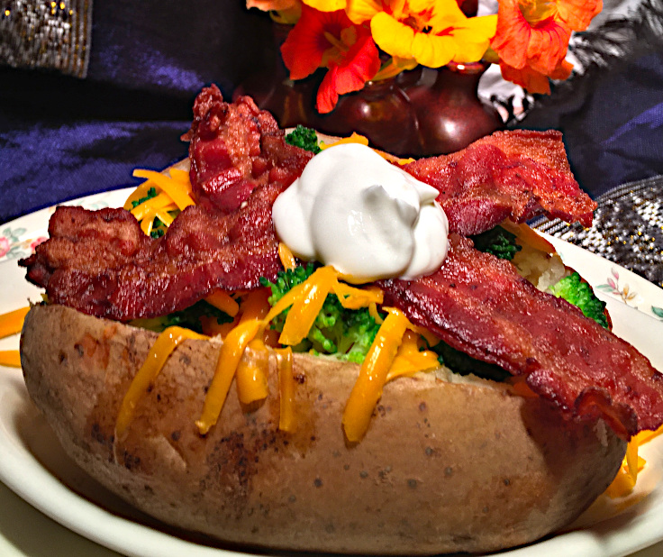

Bacon, Broccoli, and Cheddar Topped Potato

Ingredients
- 4 Baking Potatoes
- 8 Slices Bacon
- 4 Oz Broccoli
- 4 Teaspoons Butter/Margarine
- 4 Oz Cheddar Cheese
- 4 Dollops Sour Cream
Steps:
- Heat oven to 400. Rinse potato and wrap in foil - place in oven until fork can be inserted with ease (about 1 hour).
- Cook bacon in a skillet over medium heat. Drain on a paper towel.
- Chop broccoli and place in a steamer basket. Cook over steam for 2 minutes.
- Remove potato from oven and cut a criss-cross slice in the top. Pull back skin and press butter or margarine into the flesh of the potato.
- Top potato with broccoli, grated cheddar cheese, bacon and sour cream.